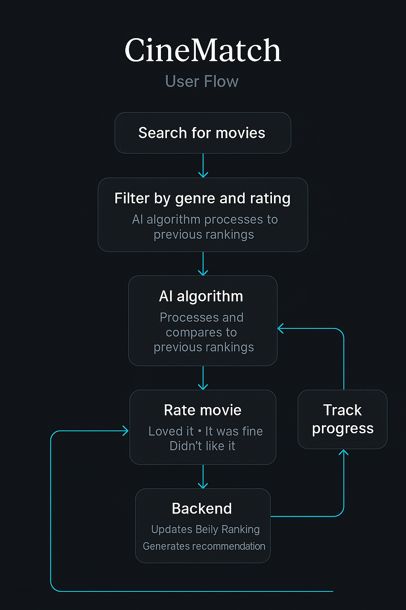

Category: Full-Stack Application / Product Case Study
Summary
This project simulates a high-fidelity e-commerce payment flow, end-to-end. I built a multi-layered system incorporating a React + TypeScript frontend,
Spring Boot backend, RESTful APIs, and PostgreSQL/MongoDB for data persistence. The system mimics real-world online transactions: users can browse items,
manage a cart, proceed through a secure checkout, and receive a digital receipt. Everything is fully deployed on Render.
Problem
E-commerce checkouts often suffer from friction — users abandon carts due to poor UX, unclear totals, or a lack of feedback. In many existing demos or projects,
payment logic is hardcoded, brittle, or frontend-only, leaving out critical backend flows like transaction validation, receipt generation, or API resilience.
As a product builder, I set out to create a checkout experience that feels complete: easy to use, reliable, fast, and representative of the full stack required
to build confidence in a simulated payment.
Features
Product Catalog: Predefined product data from MongoDB
Dynamic Shopping Cart: Add/remove items, real-time updates, persistent in localStorage
Step-by-Step Checkout UI: Guided form with optional name/email input, validation
Payment Simulation: Backend logic mimics real payment approval logic
Receipt System: Users receive a digital summary styled as a modern invoice
Order History Query: All transactions are saved and retrievable
CI/CD Pipeline: Every push triggers a rebuild and redeploy
Demo
Outcome & Learning
Strengthened my skills in product scoping and technical execution, balanced frontend polish with backend rigor, and improved my ability
to document, test, and iterate across a full stack. This project reflects my ability to think like a PM *and* engineer: shipping a scoped,
usable, and technically sound product.
CineMatch is an AI-powered iOS app that recommends movies based on a user’s mood, preferences, and emotional response.
I designed, built, and tested it using SwiftUI, FastAPI, PostgreSQL, and OpenAI’s API. It includes a unique “belly ranking” system,
GPT-generated review summaries, and mood-driven search. Over 40 beta users tested the app.
Problem
Existing streaming platforms often offer shallow or repetitive recommendations. Traditional filters fail to reflect emotional taste or shifting moods.
CineMatch aims to make finding the *right* movie easier and more personal.
Research & Ideation
People often rewatch emotionally satisfying films—not just “top-rated” ones.
Users dislike reading long reviews.
Genre is not always predictive of interest.
Validated the need for a mood-first, feedback-driven recommendation tool.
Key Features
Movie Tier List: “Loved it”, “It was fine”, “Didn’t like it” — generates a relative 1–10 score
Mood Filtering: Users input their mood or vibe, parsed via natural language
GPT Review Summaries: One-paragraph takeaways auto-generated from online reviews
User Flow Diagram

Demo
Launch
40+ beta users in 2 weeks
80% said recommendations and rankings tier list felt personal
Outcome & Learning
CineMatch taught me how to scope MVPs, balance delight with feasibility, and use user feedback to iterate rapidly.
Most importantly, it reaffirmed that great products